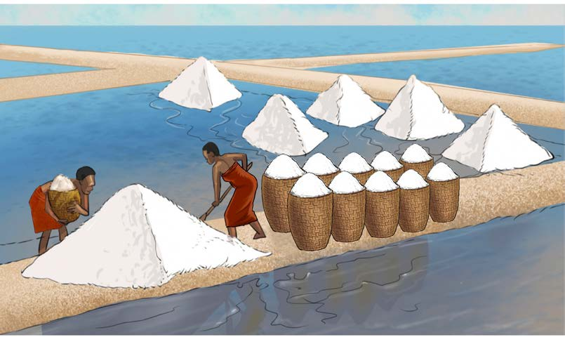

Pia, chumvi ilipatikana kwa kukausha maji yenye asili ya chumvi kwenye jua na mabaki yalizolewa kama chumvi. Jamii zilizotumia sayansi na teknolojia hii ya kutengeneza chumvi, zilitengeneza matuta yaliyoitwa mabirika maeneo ya bahari au ziwa yenye maji ya asili ya chumvi ili kukinga maji. Maji yaliingia kwenye mabirika hayo wakati wa maji kujaa, kisha maji yalikaushwa kwa njia ya mvuke wa joto la jua. Mabaki yaliyokauka yalikusanywa kama chumvi. Kielelezo namba 25, kinawasilisha sayansi na teknolojia ya kutengeneza chumvi kwa kukinga maji kwenye “mabirika” na kukaushwa kwa jua ili kupata chumvi.

Kielelezo namba 25: Sayansi na teknolojia ya kutayarisha chumvi
Sayansi na teknolojia za asilia katika uhifadhi wa vitu
Jamii za kale zilikuwa na sayansi na teknolojia mbalimbali za kuhifadhi vyakula na nafaka kwa muda fulani ili visiharibike.

Fanya uchunguzi wa mbinu za asili za uhifadhi wa vitu kama vyakula, nyama, samaki, mazao na maiti katika jamii inayokuzunguka.